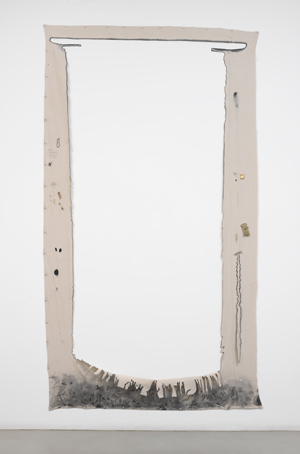
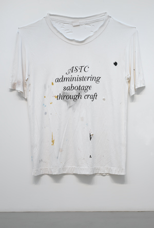

-
Absence and Presence in Amanda Ross-Ho’s Somebody Stop Me
by Hong-An Truong April 14, 2010
Amanda Ross-Ho’s first solo exhibition in New York at Mitchell-Innes & Nash offers a welcome weightiness – literal and otherwise – to a kind of funny-ha-ha play with the language of material and form. This is exemplified by the title of Ross-Ho’s exhibition, SOMEBODY STOP ME, a dry imperative that is both sarcastically self-deprecating and earnestly insecure. It’s a classic, cheeky Ross-Ho title, in perfect agreement with the names of previous shows at Cherry Martin, her Los Angeles gallery; HALF OF WHAT I SAY IS MEANINGLESS, NOTHIN FUCKIN MATTERS, and my favorite, Don’t Front (You Know I got Cha Open), stolen from the now-defunct hip hop group Black Moon. (fantastic ackronym: Brothers who Lyrically Act and Combine Kickin Music Out On Nations.) In truth, somebody shouldn’t stop her, half of what she says is not meaningless, and no, its not true that nothing fuckin’ matters. The show titles – colloquial double-negative statements whose ostensible responses amount to two empty assertions that cancel each other out – are an appropriate framework for understanding Ross-Ho’s seemingly disparate and mismatched objects. The use of positive and negative in language is echoed in the way Ross-Ho interacts with the space of the gallery’s white-walled architecture.
Take for example, Negative Carrier #7 (Yours Sincerely Wasting Away) (all works 2010), a nine-foot tall canvas drop cloth hung on the wall with the huge shape of a large format negative carrier cut crudely away. The negative space of the canvas frames the empty, white gallery walls, and attached to what remains of the cloth are a few everyday items – safety pins, rhinestones, a brass buckle. Approaching the object-ness of the cloth as one-dimensional by flattening it against the wall, Ross-Ho further subverts the material’s status by creating a negative space within it, which simultaneously returns it to its original two-dimensionality. Or does it? Perhaps it is simply that the canvas is a negative carrier. Of course! The words do actually say what they mean, but in effect, the work exists in suspension between negative and positive.
In this work and many others, the artist invokes the positive and the negative to encompass ideas of presence and absence. Invisible Ink is a diptych of tall ink-jet printed panels leaning against the wall featuring the ghosted image of the front and backside of a true-to-life-size woman. The gray tonal image is scarcely there, save for the figure’s eyes, which peek out from the panels as if staring out from the walls of the gallery. The woman is not there, but there.
Ross-Ho also teases out notions of presence / absence and negative / positive through a strategic deployment of both scale and banal material. Administering Sabotage Through Craft is an enormous, almost grotesquely larger than life t-shirt – stained, torn, and hung shabbily on the wall – that calls attention to the absent body. The t-shirt claims exactly what the artist intends, making for a kind of physical manifesto that does the work of the words inscribed on it. On the wall next to the t-shirt is another sculpture that also grossly enlarges an everyday object – this time a ‘gold-plated’ sad-faced clown pin called Double Feature; inverted to show the backside of the pin, the hollowed-out clown face works as a double negative. In Heirloom Model with Scale Natural Disaster (Preserving Memories is What We Do Best), a shoddily-constructed foam core gallery model is elevated to a different status of objecthood by its gold metallic sheathing. Sitting on an old, paint-splattered art school-style stool and leaning against the wall, the sculpture is a (be)littled representation to the site in which the viewer stands, a kind of false monument to the white cube.

Other works scattered throughout the gallery space are two of Ross-Ho’s consistently tidy assemblages in which she stages objects and images against the architectural backdrop of materials like drywall, as well as several of her more concept-craft sculptures, like Bedroom Bandit, and White Goddess #27, both of which juxtapose traditional craft forms with more “classical” art materials, like paint and canvas.Perhaps the defining work that pulls the show together and – literally – anchors it down is Double Catenary, which consists of two lengths of ½ inch towing chain that hang loosely between the three centered pillars that hold up the gallery walls. The chain, with its glittery goldness that seems simultaneously decorative and utilitarian, playful and threatening, activates the entire space. While the piece doesn’t necessarily point to institutional critique, it is indicative of the thrust of the show, whose organizing principle of spatial and visual non-sequitors is also a careful consideration of site, context, and materiality.